Overview
data summary
About our Data
Our data contains real estate data from portions of North Carolinas Wake County, Chatham County and Durham County. The dataset contains about 270,000 observations and 63 variables containing real estate data - including but not limited to houses, apartments and commercial property. After cleaning our data, the dataset only contains data from Wake County and contains about 64,000 observations and 22 variables.
- Source: data.gov
- Landing page: townofcary.org
- Raw Data: Google Drive.
Our responsibilities are divided as follows:
- Ariq:
- Natural Cubic Splines
- k-Nearest Neighbors Classification
- Ridge Regression
- Marcos:
- Multiple Linear Regression
- Naive Bayes Classification
- Logistic Regression
- Both:
- Compile dashboard and check each others work
Table Summary
Table Summary
| Name | Description |
|---|---|
| Calculated.Acreage | Calculated area from property in acres |
| Land.Class | Land classification description |
| Land.Class.Code | Land classification code |
| Total.Structures | Total number of structures on the property |
| Total.Units | Total number of units on the property |
| Building.Value | Revenue Dept. assessed value for structures contained within the property |
| Land.Value | Revenue Dept. assessed value for land contained within the property |
| Land.Sale.Value | US dollar value for the land when last sold. |
| Land.Sale.Date | Date that land was last sold. |
| Total.Sale.Value | US dollar value for the land and building(s) when last sold. |
| Total.Sale.Date | Date that land and/or building(s) when last sold. |
| WC.ETJ | Corporate limits where property is located. |
| Billing.Class | Billing classifications for Revenue Department use. |
| APA.Ownership.Description | American Planning Association (APA) ownership description. |
| APA.Activity.Description | APA activity description. |
| APA.Function.Description | APA function description. |
| APA.Site.Description | APA site description. |
| Total.Building.Square.Footage | Total square footage of the structure. |
| Type.And.Use.Description | Building use and type description |
| Phy.City | City where property is located. |
| Shape.STArea | Property structure area. |
| Year.Built | Year property was built. |
Source: Town of Cary Dataset Schema
Multiple Linear Regression
Column
Research & Model Selection
My goal for this section is to model what maximizes the total sale
value of a plot of land from this dataset. Initially I wanted to include
both numeric and categorical data in my model but I would run into some
problems more on that later. Using the cleaned dataset, and all
possible subsets, I picked out seven regressors and compared them and
their criterion to each other: Calculated.Acreage,
Total.Structures, Total.Units,
Building.Value, Land.Value,
Land.Sale.Value, and
Total.Building.Square.Footage. The following shows these
results.
| Acreage | Sructures | Units | Building | Land | Land Sale | Sq. Footage | AdjR2 | Cp | BIC |
|---|---|---|---|---|---|---|---|---|---|
| * | 0.7452296 | 9596.42695 | -93695.7 | ||||||
| * | * | 0.7725733 | 1212.01377 | -101466.9 | |||||
| * | * | * | 0.7740828 | 750.09264 | -101913.2 | ||||
| * | * | * | * | 0.7756057 | 284.09159 | -102366.6 | |||
| * | * | * | * | * | 0.7761798 | 109.05205 | -102532.0 | ||
| * | * | * | * | * | * | 0.7764352 | 31.72609 | -102600.2 | |
| * | * | * | * | * | * | * | 0.7765158 | 8.00000 | -102614.8 |
As shown above, each criterion points to the fact that the full model is the most accurate model. This seems like a great fit to the data however, its not. The models variance inflation factor (VIF) and the datas scatterplot matrix, as shown to the right, proves that there is collinearity between the regressors.
Calculated.Acreage Total.Structures
2.419908 3.413634
Total.Units Building.Value
2.232743 11.698253
Land.Value Land.Sale.Value
9.004143 2.016888
Total.Building.Square.Footage
16.285497 This calls for a reduced model.
Reduced Model & Diagnostics
Our new best model regresses Total.Sale.Value with
Calculated.Acreage, Total.Structures,
Total.Units, and Land.Sale.Value. The model
summary and VIF is shown below.
Call:
lm(formula = Total.Sale.Value ~ Calculated.Acreage + Total.Structures +
Total.Units + Land.Sale.Value, data = df_mlr)
Residuals:
Min 1Q Median 3Q Max
-65277755 -119735 -20383 85065 95479184
Coefficients:
Estimate Std. Error t value Pr(>|t|)
(Intercept) -1.405e+06 1.511e+04 -93.01 <2e-16 ***
Calculated.Acreage 3.610e+05 6.232e+03 57.93 <2e-16 ***
Total.Structures 1.591e+06 1.532e+04 103.88 <2e-16 ***
Total.Units 3.762e+04 4.702e+02 79.99 <2e-16 ***
Land.Sale.Value 8.212e-01 1.722e-02 47.69 <2e-16 ***
---
Signif. codes: 0 '***' 0.001 '**' 0.01 '*' 0.05 '.' 0.1 ' ' 1
Residual standard error: 1379000 on 68532 degrees of freedom
Multiple R-squared: 0.6066, Adjusted R-squared: 0.6066
F-statistic: 2.642e+04 on 4 and 68532 DF, p-value: < 2.2e-16Calculated.Acreage Total.Structures Total.Units Land.Sale.Value
1.931941 2.333885 1.820155 1.285553 The calculated acreage, the land sale value, and the total number of structures and units have a direct correlation against the total sale value of a property. This model explains about 60.66% of the variance, as seen by the adjusted-\(R^2\) value.
However, theres a problem: none of the assumptions for multiple
linear regression are satisfied, and a log transform is necessary. The
only problem that comes with this is that Total.Units
cannot be used anymore since a large portion of the data contains
zero.
Final Model
The final model is as follows:
Call:
lm(formula = log(Total.Sale.Value) ~ log(Calculated.Acreage) +
log(Total.Structures) + log(Land.Sale.Value), data = df_mlr)
Residuals:
Min 1Q Median 3Q Max
-9.0474 -0.2003 -0.0033 0.2204 4.4988
Coefficients:
Estimate Std. Error t value Pr(>|t|)
(Intercept) 6.859083 0.030204 227.09 <2e-16 ***
log(Calculated.Acreage) 0.101919 0.002066 49.33 <2e-16 ***
log(Total.Structures) 0.713479 0.018643 38.27 <2e-16 ***
log(Land.Sale.Value) 0.554229 0.002730 203.01 <2e-16 ***
---
Signif. codes: 0 '***' 0.001 '**' 0.01 '*' 0.05 '.' 0.1 ' ' 1
Residual standard error: 0.4743 on 68533 degrees of freedom
Multiple R-squared: 0.4493, Adjusted R-squared: 0.4493
F-statistic: 1.864e+04 on 3 and 68533 DF, p-value: < 2.2e-16Looking at the graphs to the right (aside from collinearity), you can see a side-by-side comparison showing how the log transform has satisfied all assumptions but normality. With this in mind, this model might not produce the most accurate or precise results. Nonparametric methods should be considered when asking this question.
Column
Collinearity
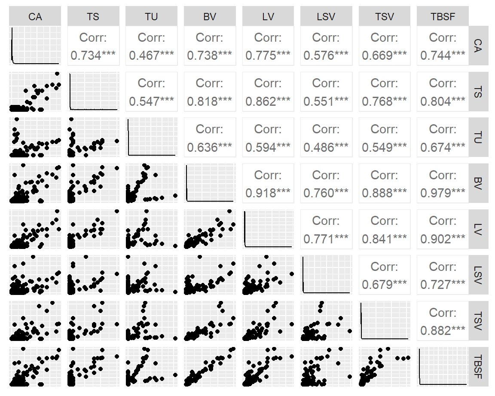
Variance
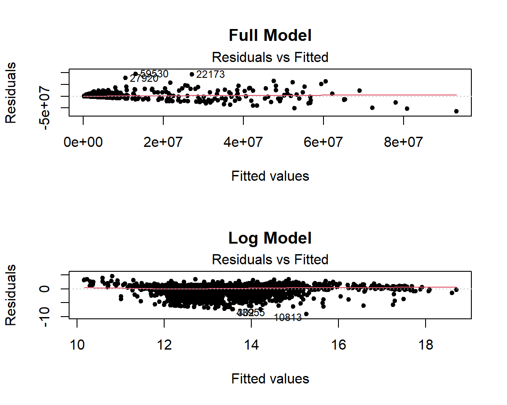
Normality

Leverage
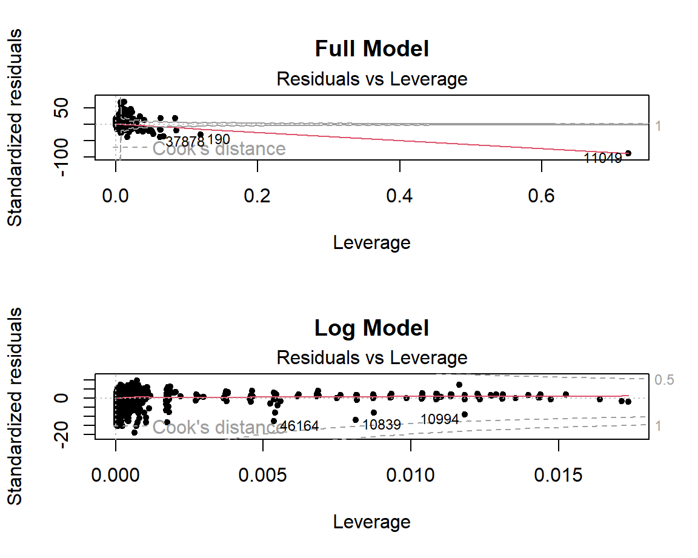
Ridge Regression
Column
Creating the Initial Model
The first step is to create a ridge regression model using the
glmnet library without any \(\lambda\) yet. Below is a summary of said
model. In the plot tabs, you can see the plot of the coefficients for
this model.
| Length | Class | Mode | |
|---|---|---|---|
| a0 | 100 | -none- | numeric |
| beta | 300 | dgCMatrix | S4 |
| df | 100 | -none- | numeric |
| dim | 2 | -none- | numeric |
| lambda | 100 | -none- | numeric |
| dev.ratio | 100 | -none- | numeric |
| nulldev | 1 | -none- | numeric |
| npasses | 1 | -none- | numeric |
| jerr | 1 | -none- | numeric |
| offset | 1 | -none- | logical |
| call | 4 | -none- | call |
| nobs | 1 | -none- | numeric |
Finding the Best \(\lambda\)
To find our best \(\lambda\) value
we will be cross-validating our models. The glmnet library
has a built-in function for that and the process can be seen visualized
under Plotting Cross-Validated Model. To see if using this improved
the previous model, we calculate our adjusted \(R^2\) to see how much variation the model
takes into account. The coefficients plot with our best \(\lambda\) is in the Plotting Best Model
tab.
Below is \(\lambda\) value that best fits our data.
[1] 1462622Below are the coefficients for the model with said \(\lambda\).
4 x 1 sparse Matrix of class "dgCMatrix"
s0
(Intercept) -1.125869e+06
Calculated.Acreage 3.956674e+05
Total.Structures 1.364952e+06
Land.Sale.Value 7.783176e-01Below is the summary of said model.
| Length | Class | Mode | |
|---|---|---|---|
| a0 | 1 | -none- | numeric |
| beta | 3 | dgCMatrix | S4 |
| df | 1 | -none- | numeric |
| dim | 2 | -none- | numeric |
| lambda | 1 | -none- | numeric |
| dev.ratio | 1 | -none- | numeric |
| nulldev | 1 | -none- | numeric |
| npasses | 1 | -none- | numeric |
| jerr | 1 | -none- | numeric |
| offset | 1 | -none- | logical |
| call | 5 | -none- | call |
| nobs | 1 | -none- | numeric |
The whole point of using this method was to see if we could find an improved model that addresses multicollinearity. After calculating the adjusted \(R^2\), it seems that this model is a slight improvement with the same variables and predicted value from the previous model selection.
[1] 0.5225592Column
First Model Coeffecients Plot
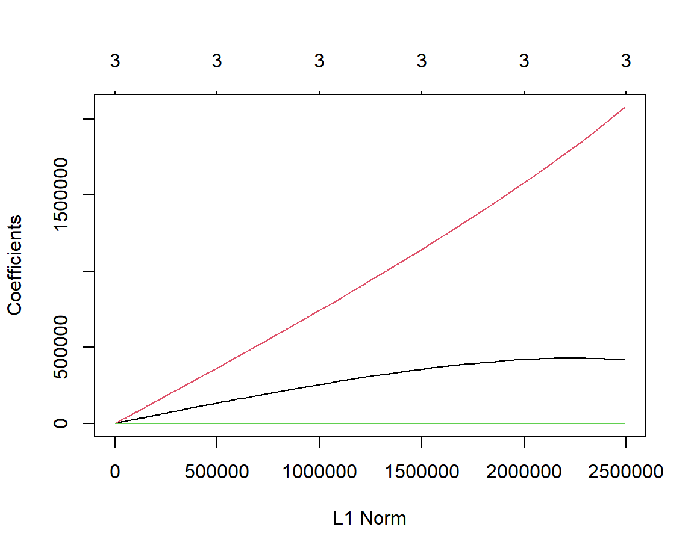
Plotting Cross-Validated Model
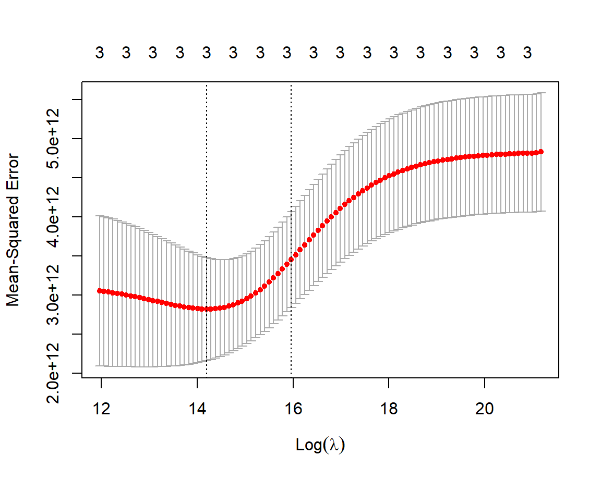
Plotting Best Model
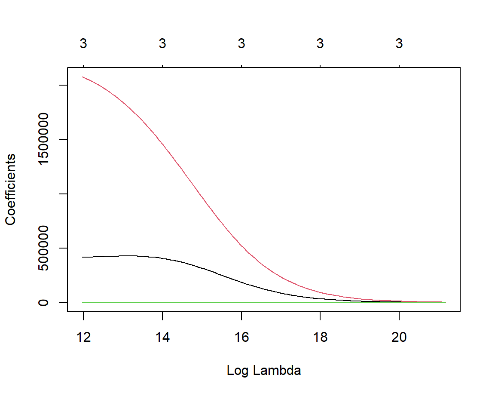
Logistic Regression
Column
All Possible Subsets
What makes a piece of property expensive? I wanted to answer this
question using logistic regression as my classification model. To answer
this question, I created a new Boolean variable titled
Is.Expensive, where it returns true if the total sale value
of the property was over $489,000, the top 25th percentile in our
dataset. Before picking out the best model, I filtered out all property
where the total sale value was over $832,500 since anything over that
threshold is considered an outlier. Using this new variable, I used all
possible subsets to find the best variables for my model. The table
showing all possible subsets is shown below:
| Acreage | Sructures | Units | Building | Sq. Footage | Expensive? | AdjR2 | Cp | BIC |
|---|---|---|---|---|---|---|---|---|
| * | 0.3319078 | 98.975288 | -26014.95 | |||||
| * | * | 0.3323767 | 54.599215 | -26050.20 | ||||
| * | * | * | 0.3326722 | 27.008328 | -26068.70 | |||
| * | * | * | * | 0.3328098 | 14.691170 | -26071.94 | ||
| * | * | * | * | * | 0.3329046 | 6.519005 | -26071.04 | |
| * | * | * | * | * | * | 0.3329100 | 7.000000 | -26061.48 |
As shown above, while other criterion point to multiple models having the best fit, Mallows \(C_p\) points to the model with five regressors being the best fit. I proceeded with the model classifying expensiveness to calculated acreage, total structures, building value and square footage.
The following shows the summary and VIF of the chosen model.
Call:
glm(formula = Is.Expensive ~ Calculated.Acreage + Total.Structures +
Building.Value + Total.Building.Square.Footage, family = "binomial",
data = df_log2)
Coefficients:
Estimate Std. Error z value Pr(>|z|)
(Intercept) -5.504e+00 6.890e-01 -7.989 1.36e-15 ***
Calculated.Acreage -1.830e-01 2.913e-02 -6.283 3.33e-10 ***
Total.Structures -1.453e+00 6.879e-01 -2.113 0.0346 *
Building.Value 1.459e-05 2.348e-07 62.157 < 2e-16 ***
Total.Building.Square.Footage 1.840e-04 2.952e-05 6.233 4.57e-10 ***
---
Signif. codes: 0 '***' 0.001 '**' 0.01 '*' 0.05 '.' 0.1 ' ' 1
(Dispersion parameter for binomial family taken to be 1)
Null deviance: 66676 on 64552 degrees of freedom
Residual deviance: 43456 on 64548 degrees of freedom
AIC: 43466
Number of Fisher Scoring iterations: 5 Calculated.Acreage Total.Structures
1.048652 1.002820
Building.Value Total.Building.Square.Footage
2.895133 2.875376 After looking at the scatterplot matrix and the VIF of this model, I feel like there seems to be strong evidence of the building value and square footage to have collinearity. With that in mind, I refit a smaller model without the building value of the property.
Call:
glm(formula = Is.Expensive ~ Calculated.Acreage + Total.Structures +
Total.Building.Square.Footage, family = "binomial", data = df_log2)
Coefficients:
Estimate Std. Error z value Pr(>|z|)
(Intercept) -5.131e+00 6.493e-01 -7.902 2.74e-15 ***
Calculated.Acreage -2.808e-02 2.707e-02 -1.037 0.2997
Total.Structures -1.559e+00 6.484e-01 -2.404 0.0162 *
Total.Building.Square.Footage 1.829e-03 1.741e-05 105.045 < 2e-16 ***
---
Signif. codes: 0 '***' 0.001 '**' 0.01 '*' 0.05 '.' 0.1 ' ' 1
(Dispersion parameter for binomial family taken to be 1)
Null deviance: 66676 on 64552 degrees of freedom
Residual deviance: 48088 on 64549 degrees of freedom
AIC: 48096
Number of Fisher Scoring iterations: 5 Calculated.Acreage Total.Structures
1.036145 1.005022
Total.Building.Square.Footage
1.032090 Now the VIF of the model is extremely small, but the calculated acreage is no longer significant. With this, we can show our final model on the next page.
Final Model
The final model (and the model the logit graph is based on) is shown below.
Call:
glm(formula = Is.Expensive ~ Total.Structures + Total.Building.Square.Footage,
family = "binomial", data = df_log2)
Coefficients:
Estimate Std. Error z value Pr(>|z|)
(Intercept) -5.089e+00 6.523e-01 -7.802 6.09e-15 ***
Total.Structures -1.603e+00 6.513e-01 -2.461 0.0139 *
Total.Building.Square.Footage 1.826e-03 1.714e-05 106.497 < 2e-16 ***
---
Signif. codes: 0 '***' 0.001 '**' 0.01 '*' 0.05 '.' 0.1 ' ' 1
(Dispersion parameter for binomial family taken to be 1)
Null deviance: 66676 on 64552 degrees of freedom
Residual deviance: 48089 on 64550 degrees of freedom
AIC: 48095
Number of Fisher Scoring iterations: 5 Total.Structures Total.Building.Square.Footage
1.000806 1.000806 Only the number of structures and the total building square footage are the predictors. With this we can model our logit function, and after running cross-validation, we only have about a 12% misclassification rate, shown below.
[1] 0.116054Column
Scatterplot Matrix
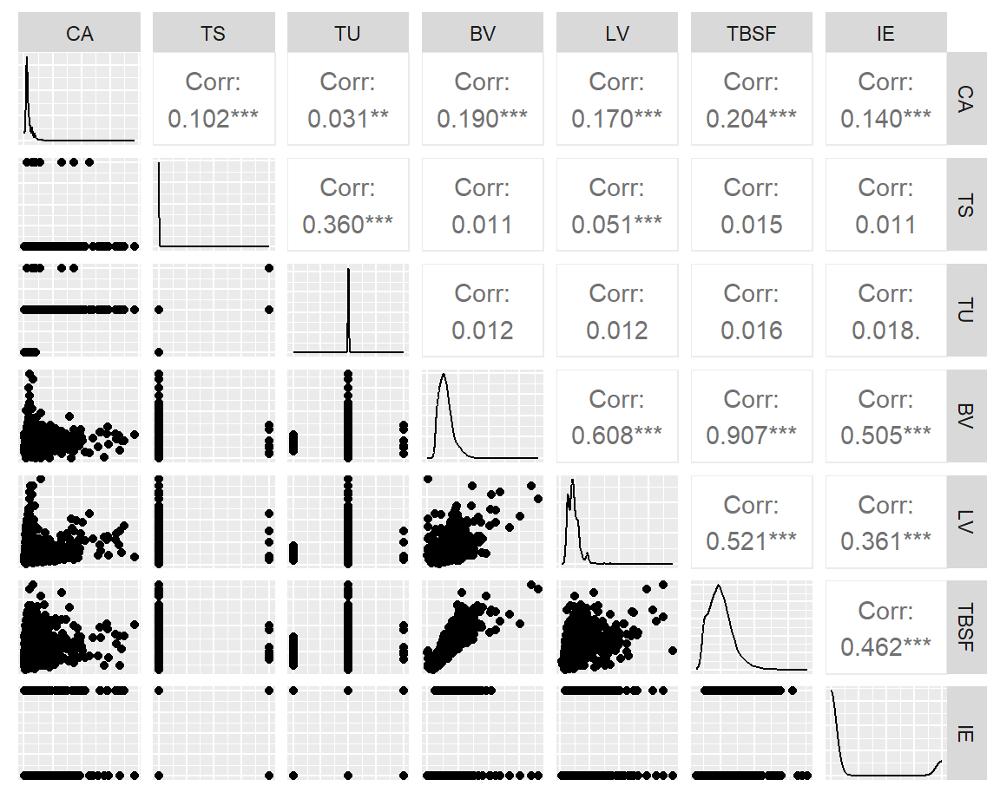
Logit Grpah
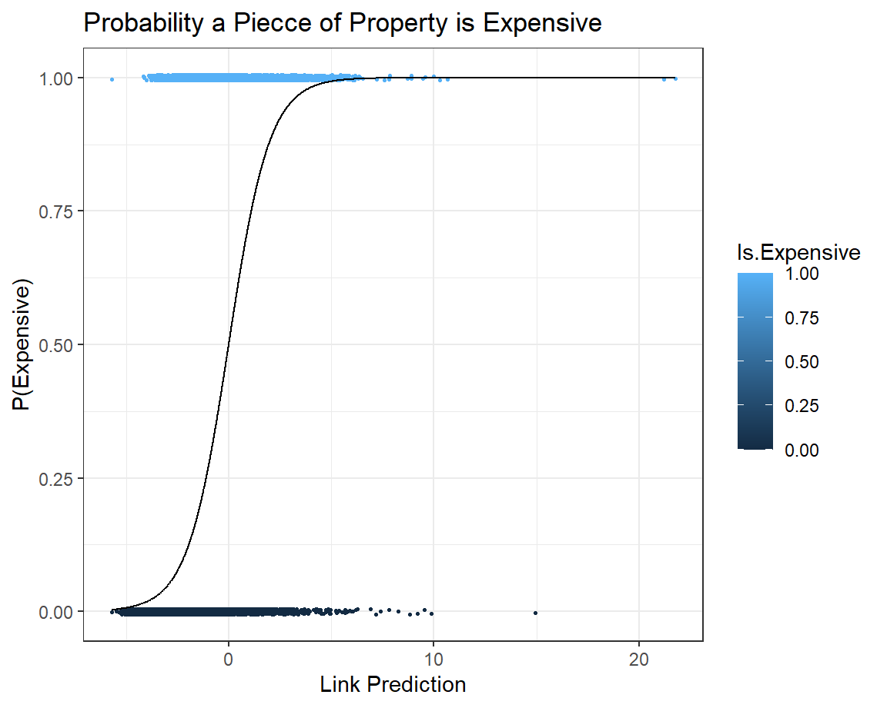
Natural Cubic Splines
Column
Different Degrees
First, I filtered the data so it only includes the lans and land sale value between $250,000 and $900,000 that way outliers arent included in our regression model. I also sampled the data to only 3000 observations for legibility purposes. Then, I fit models between one to five degrees of freedom in order to find our best model. Below is a summary of the five models.
Call:
lm(formula = Total.Sale.Value ~ ns(Land.Value, df = 1), data = ns_df)
Residuals:
Min 1Q Median 3Q Max
-521781 -96325 -11957 80366 511646
Coefficients:
Estimate Std. Error t value Pr(>|t|)
(Intercept) 175500 6138 28.59 <2e-16 ***
ns(Land.Value, df = 1) 722347 21118 34.20 <2e-16 ***
---
Signif. codes: 0 '***' 0.001 '**' 0.01 '*' 0.05 '.' 0.1 ' ' 1
Residual standard error: 141000 on 2998 degrees of freedom
Multiple R-squared: 0.2807, Adjusted R-squared: 0.2805
F-statistic: 1170 on 1 and 2998 DF, p-value: < 2.2e-16
Call:
lm(formula = Total.Sale.Value ~ ns(Land.Value, df = 2), data = ns_df)
Residuals:
Min 1Q Median 3Q Max
-515028 -95708 -10159 80789 505436
Coefficients:
Estimate Std. Error t value Pr(>|t|)
(Intercept) 140859 11080 12.71 <2e-16 ***
ns(Land.Value, df = 2)1 659632 22917 28.78 <2e-16 ***
ns(Land.Value, df = 2)2 419903 22395 18.75 <2e-16 ***
---
Signif. codes: 0 '***' 0.001 '**' 0.01 '*' 0.05 '.' 0.1 ' ' 1
Residual standard error: 140700 on 2997 degrees of freedom
Multiple R-squared: 0.2841, Adjusted R-squared: 0.2836
F-statistic: 594.6 on 2 and 2997 DF, p-value: < 2.2e-16
Call:
lm(formula = Total.Sale.Value ~ ns(Land.Value, df = 3), data = ns_df)
Residuals:
Min 1Q Median 3Q Max
-514191 -95213 -10184 80971 504714
Coefficients:
Estimate Std. Error t value Pr(>|t|)
(Intercept) 132655 21417 6.194 6.67e-10 ***
ns(Land.Value, df = 3)1 303163 13211 22.948 < 2e-16 ***
ns(Land.Value, df = 3)2 618020 47995 12.877 < 2e-16 ***
ns(Land.Value, df = 3)3 475703 29141 16.324 < 2e-16 ***
---
Signif. codes: 0 '***' 0.001 '**' 0.01 '*' 0.05 '.' 0.1 ' ' 1
Residual standard error: 140700 on 2996 degrees of freedom
Multiple R-squared: 0.2841, Adjusted R-squared: 0.2834
F-statistic: 396.4 on 3 and 2996 DF, p-value: < 2.2e-16
Call:
lm(formula = Total.Sale.Value ~ ns(Land.Value, df = 4), data = ns_df)
Residuals:
Min 1Q Median 3Q Max
-518886 -95806 -11285 80269 509585
Coefficients:
Estimate Std. Error t value Pr(>|t|)
(Intercept) 97559 32889 2.966 0.00304 **
ns(Land.Value, df = 4)1 255299 30968 8.244 2.46e-16 ***
ns(Land.Value, df = 4)2 357372 23407 15.268 < 2e-16 ***
ns(Land.Value, df = 4)3 677197 71700 9.445 < 2e-16 ***
ns(Land.Value, df = 4)4 479933 31300 15.333 < 2e-16 ***
---
Signif. codes: 0 '***' 0.001 '**' 0.01 '*' 0.05 '.' 0.1 ' ' 1
Residual standard error: 140700 on 2995 degrees of freedom
Multiple R-squared: 0.2847, Adjusted R-squared: 0.2837
F-statistic: 298 on 4 and 2995 DF, p-value: < 2.2e-16
Call:
lm(formula = Total.Sale.Value ~ ns(Land.Value, df = 5), data = ns_df)
Residuals:
Min 1Q Median 3Q Max
-528976 -93190 -10790 80978 514539
Coefficients:
Estimate Std. Error t value Pr(>|t|)
(Intercept) 153660 40812 3.765 0.00017 ***
ns(Land.Value, df = 5)1 204372 38025 5.375 8.26e-08 ***
ns(Land.Value, df = 5)2 211515 43224 4.894 1.04e-06 ***
ns(Land.Value, df = 5)3 386563 25744 15.015 < 2e-16 ***
ns(Land.Value, df = 5)4 529933 88844 5.965 2.74e-09 ***
ns(Land.Value, df = 5)5 439586 36006 12.209 < 2e-16 ***
---
Signif. codes: 0 '***' 0.001 '**' 0.01 '*' 0.05 '.' 0.1 ' ' 1
Residual standard error: 140500 on 2994 degrees of freedom
Multiple R-squared: 0.2867, Adjusted R-squared: 0.2855
F-statistic: 240.6 on 5 and 2994 DF, p-value: < 2.2e-16To determine the best degree of freedom, I calculated each splines sum of square error by taking the sum of the residuals squared.
| df | SSE |
|---|---|
| 1 | 5.959103e+13 |
| 2 | 5.931246e+13 |
| 3 | 5.930766e+13 |
| 4 | 5.926144e+13 |
| 5 | 5.909807e+13 |
Best Model
From the SSE table and the elbow plot, the best model appears to be of degree 5. Below is a summary of the model.
Call:
lm(formula = Total.Sale.Value ~ ns(Land.Value, df = 5), data = ns_df)
Residuals:
Min 1Q Median 3Q Max
-528976 -93190 -10790 80978 514539
Coefficients:
Estimate Std. Error t value Pr(>|t|)
(Intercept) 153660 40812 3.765 0.00017 ***
ns(Land.Value, df = 5)1 204372 38025 5.375 8.26e-08 ***
ns(Land.Value, df = 5)2 211515 43224 4.894 1.04e-06 ***
ns(Land.Value, df = 5)3 386563 25744 15.015 < 2e-16 ***
ns(Land.Value, df = 5)4 529933 88844 5.965 2.74e-09 ***
ns(Land.Value, df = 5)5 439586 36006 12.209 < 2e-16 ***
---
Signif. codes: 0 '***' 0.001 '**' 0.01 '*' 0.05 '.' 0.1 ' ' 1
Residual standard error: 140500 on 2994 degrees of freedom
Multiple R-squared: 0.2867, Adjusted R-squared: 0.2855
F-statistic: 240.6 on 5 and 2994 DF, p-value: < 2.2e-16Column
Plots for Models with Different Degrees
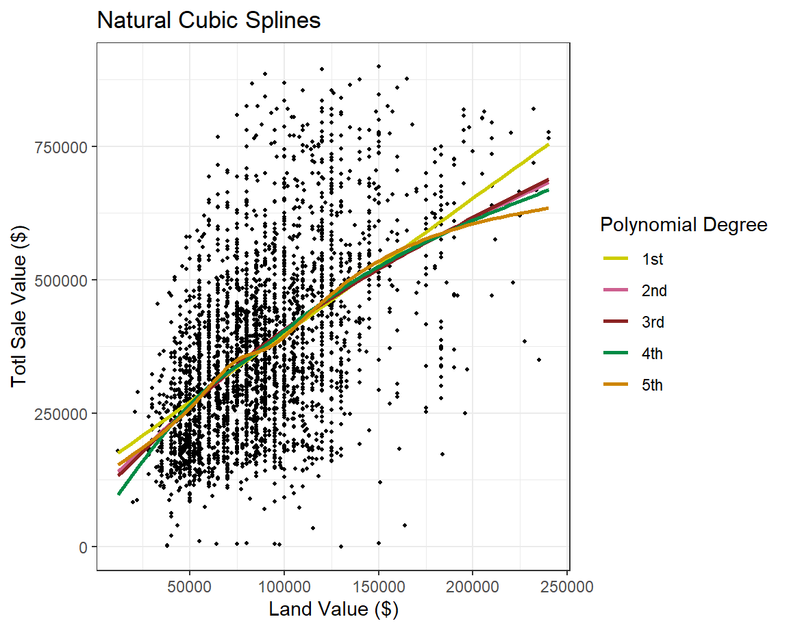
Elbow Plot
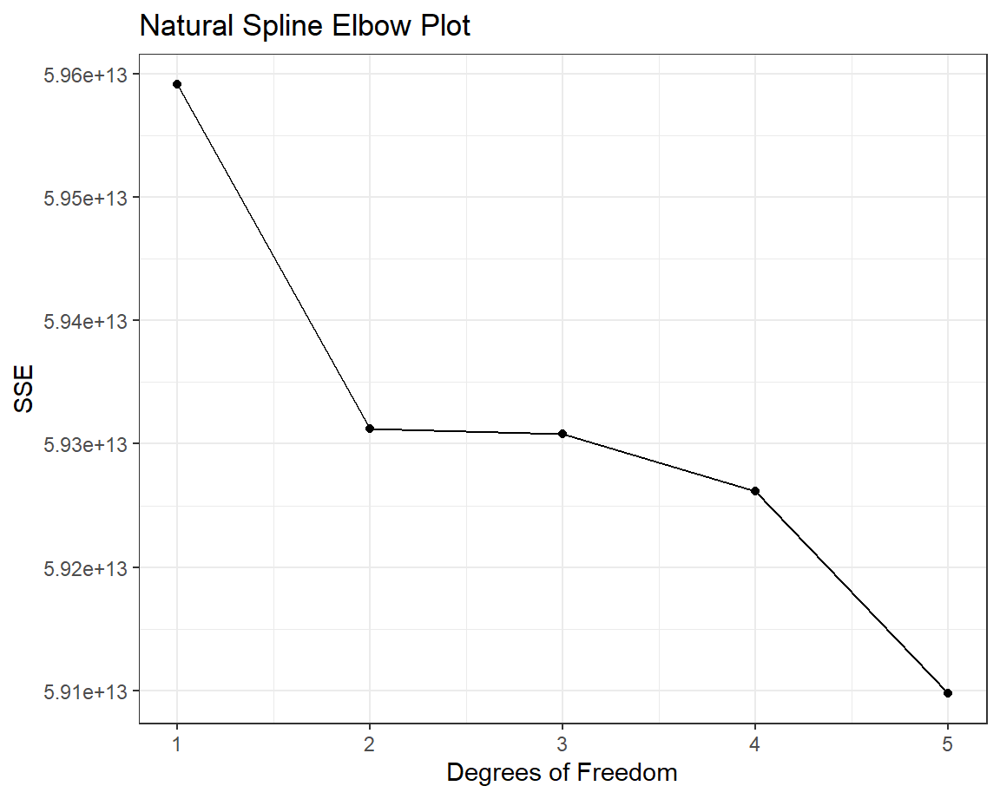
Best Model Plotted
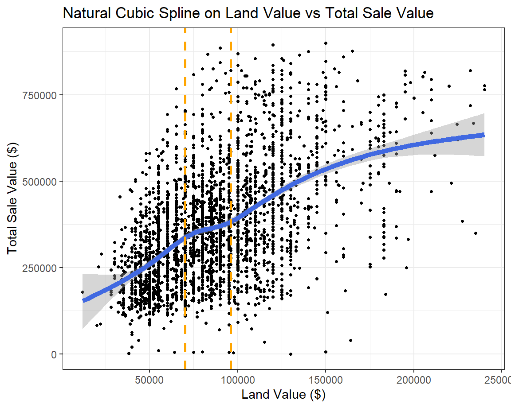
Naive Bayes
Column
Accuracy rate
77%Observations tested
20261Training/testing split
70-30%Confusion Matrix

Column
Research Question & Classification Process
Lets pretend that youre a property developer building single-family houses and you bought a piece of land and want to estimate how much money your residents are going to pay per month in rent. Over the span of three years, about how much will they need to pay per month for your net income to break even?
I wanted to view the relationship between the land value, acreage and total sale value of a plot of residential land. Since Naive Bayes is much better suited for categorical data than numeric data, I created intervals for these variables. I would calculate the estimated rent as follows:
\[\hbox{Rent} = \frac{1}{36} \, \left(\hbox{Land Value - Total Sale Value}\right)\]
Below is a table summarizing these intervals:
| Interval | Description |
|---|---|
| Calculated | Small if smaller than 0.4 acres, Large if greater |
| Land Value | Less than $50k, between $50k and $100k or over $100k |
| Total Sale Value | Less than $200k, between $200k and $400k or over $400k |
| Estimated Rent | Less than $5k, between $5k and $10k or over $10k |
With this in mind, the output of the confusion matrix is shown below:
Confusion Matrix and Statistics
Actual
Predicted <5k >10k 5k-10k
<5k 2832 8 11
>10k 18 5851 1943
5k-10k 2482 69 7047
Overall Statistics
Accuracy : 0.7764
95% CI : (0.7706, 0.7821)
No Information Rate : 0.4443
P-Value [Acc > NIR] : < 2.2e-16
Kappa : 0.6504
Mcnemar's Test P-Value : < 2.2e-16
Statistics by Class:
Class: <5k Class: >10k Class: 5k-10k
Sensitivity 0.5311 0.9870 0.7829
Specificity 0.9987 0.8632 0.7734
Pos Pred Value 0.9933 0.7490 0.7342
Neg Pred Value 0.8564 0.9938 0.8167
Prevalence 0.2632 0.2926 0.4443
Detection Rate 0.1398 0.2888 0.3478
Detection Prevalence 0.1407 0.3856 0.4737
Balanced Accuracy 0.7649 0.9251 0.7782kNN Classification
Column
The Method
I created a new column, Time.Period, which is a
categorical variable consisting of three different values:
Old for property built before 1995, Modern for
properties built between 1995 and 2019, and New for
properties built after 2019. For visualization purposes, I reduced the
dataset to a sample of 5,000 observations. Then, I proceeded to split
the training and testing data in a 70/30% split, running the kNN
classifier with our testing data (\(k=5\)), constructed the confusion matrix
and got a classification rate of 76%.
A problem running this method is that properties are not evenly skewed throughout the years. We cant account for older properties built, so there is a heavy bias towards classifying something as Modern since a good portion of the sales happened after 2019.
Confusion Matrix and Statistics
Reference
Prediction Modern(1995-2019) New(2019-) Old(Before 1995)
Modern(1995-2019) 1076 89 135
New(2019-) 34 13 7
Old(Before 1995) 79 0 67
Overall Statistics
Accuracy : 0.7707
95% CI : (0.7485, 0.7917)
No Information Rate : 0.7927
P-Value [Acc > NIR] : 0.9827
Kappa : 0.2279
Mcnemar's Test P-Value : 5.024e-10
Statistics by Class:
Class: Modern(1995-2019) Class: New(2019-)
Sensitivity 0.9050 0.127451
Specificity 0.2797 0.970672
Pos Pred Value 0.8277 0.240741
Neg Pred Value 0.4350 0.938451
Prevalence 0.7927 0.068000
Detection Rate 0.7173 0.008667
Detection Prevalence 0.8667 0.036000
Balanced Accuracy 0.5924 0.549062
Class: Old(Before 1995)
Sensitivity 0.32057
Specificity 0.93881
Pos Pred Value 0.45890
Neg Pred Value 0.89513
Prevalence 0.13933
Detection Rate 0.04467
Detection Prevalence 0.09733
Balanced Accuracy 0.62969Accuracy rate (%)
76Observations tested
5000Training/testing split (%)
70-30Column
kNN Visualization Plot
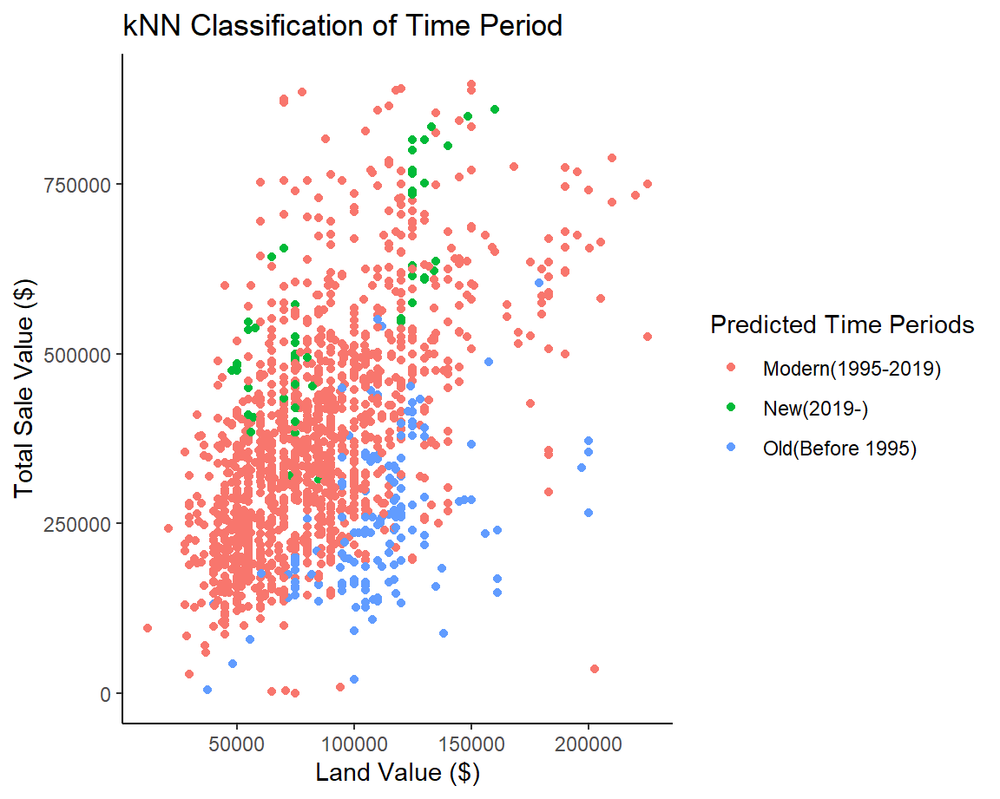
Confusion Matrix
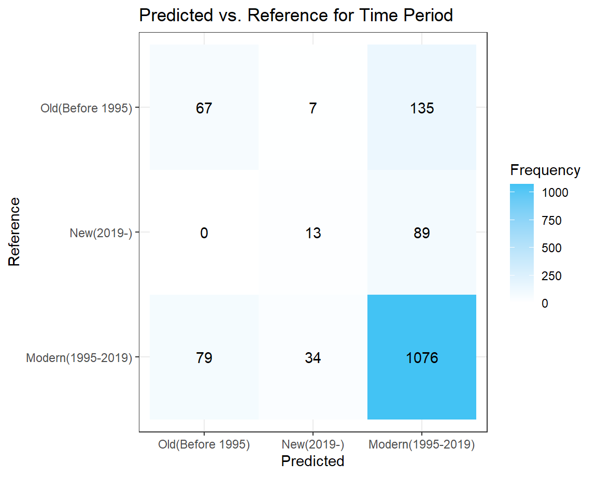